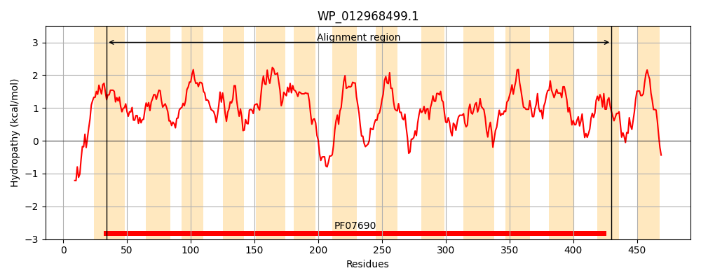
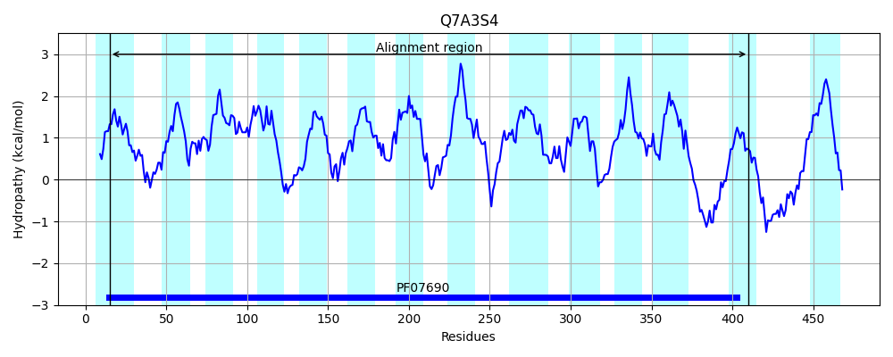
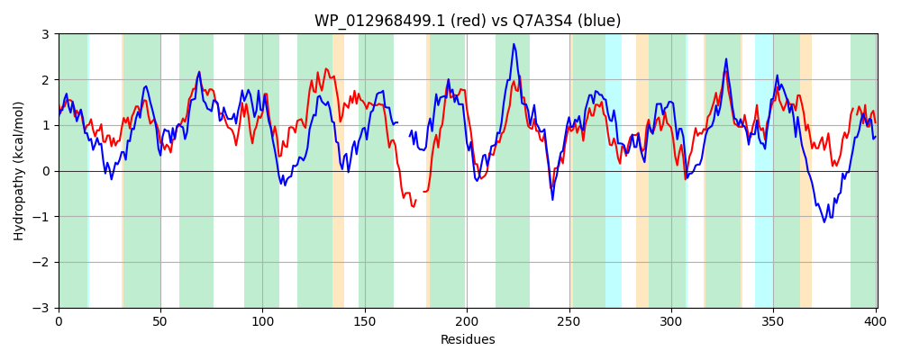

Hit Accession: Q7A3S4
Hit TCID: 2.A.1.3.61
Hit Description: gnl|BL_ORD_ID|15369 gnl|TC-DB|Q7A3S4|2.A.1.3.61 SA2203 protein OS=Staphylococcus aureus (strain N315) GN=SA2203 PE=4 SV=1
Mach Len: 401
e:0.000000
Query TMS Count : 14
Hit TMS Count: 14
TMS-Overlap Score: 11.750000
Predicted Substrates:CHEBI:8829;rhodamine 6G, CHEBI:4883;ethidium bromide, CHEBI:35268;quaternary ammonium salt, CHEBI:9502;tetraphenylphosphonium, CHEBI:5742;2'-(4-ethoxyphenyl)-5-(4-methylpiperazin-1-yl)-2,5'-bibenzimidazole, CHEBI:2496;doxorubicin, CHEBI:4330;daunorubicin, CHEBI:22582;antimicrobial agent
BLAST Alignment:
Score: 493 , Bit scores: 194 bits, E-value: 1.8e-56, Alignment length: 401, Percentage identity: 27
Query: 34 LGAFATMLSSTMLSAALPAMANGLGVTDASIQWIATAYLMALAAGVPVSAWAVKRFGATQLWLYALILFGVFSAVCALSPNVEVLLTARIMQGLAGGLLVPAGQTILGLVVGRERLGRIIGTIGVAIVIAPLLGTSLGAVLLQVCGWRVLFFINVPLSLCAWLAGWKLLPRPTIKN---DKPLSLDWMGLILILCSLPLLMEGIKGVSLNSGENSGNIILLSVGALFIGLFIYRSFRIDSPLLHLSLFKHRGFTLSALLMAIGGAVNFGGQFLLPLYFRDVCHEALADVGLLLTPQLIGSATGFPVAGYFSDRLGPRVVLIVGGLLSVLATWPLAMIDGGSSYLLVGSALAIRGFGLALATVPAMAAGLAMAGTRHVSDAAPILNILQRV-GAMAGAALVT 430
+G F +L+ T+L ALP++ ++ +QW+ TA+L+ +P+SA ++R+ Q++L + +F + + + LSP+ LL ARI+Q L G+++P T + V G+ +G G+ I +AP +G +L L++ WR LF + P++ +L G+K TIKN + +D++ +I + L+ G +S +N ++ + G + + LF+ R +R+ +PLL+ ++FK++ FT+ ++M + G + +LP++ +++ H + D GL L P I A +G ++ GPR + +VG + V+ T ++D +S +++ + AIR G+AL +P M + + + + N +Q++ G++ AAL+T
Sbjct: 15 MGGFFGLLNETLLVTALPSIMKDFEISYTQVQWLTTAFLLTNGIVIPLSALVIQRYTTRQVFLVGISIFFLGTLLGGLSPHFATLLVARIIQALGAGIMMPLMMTTILDVFQPHERGKYMGIFGLVIGLAPAIGPTLSGYLVEYLNWRSLFHVVAPIAAVTFLIGFK-----TIKNVGTTIKVPIDFISVIFSVLGFGGLLYGTSSISEKGFDNPIVLVSMIGGVVLVALFVLRQYRLSTPLLNFAVFKNKQFTVGIIIMGVTMVSMIGSETILPIFVQNLLHRSALDSGLTLLPGAIVMAFMSMTSGALYEKFGPRKLALVGMAIVVITTAYFVVMDEQTSTIMLATVYAIRMVGIALGLIPVMTHTMNQLKPEMNAHGSSMTNTVQQIAGSIGTAALIT 410 | Protein Hydropathy Plots: |
|---|
|  |  |
Pairwise Alignment-Hydropathy Plot:
|
|---|
|  |